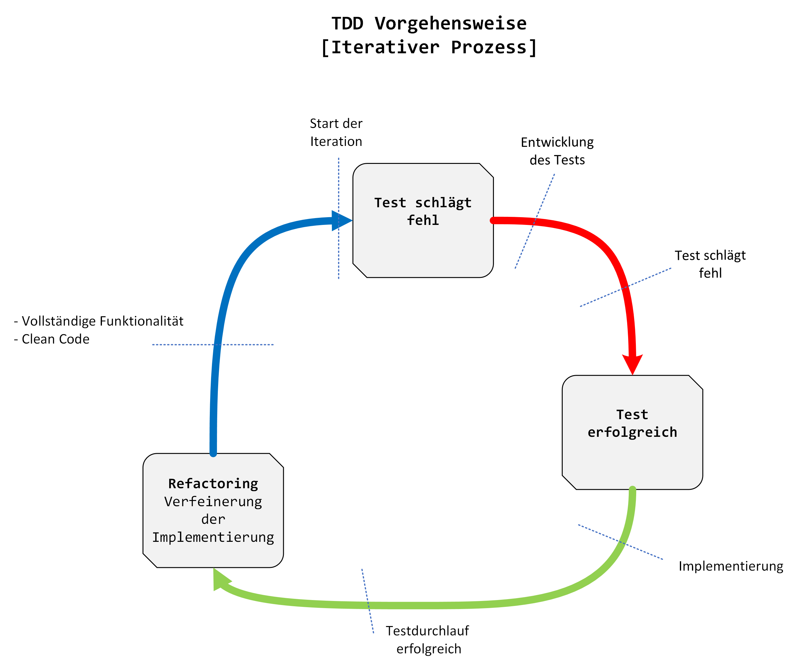

TDD - Test-Driven Development
Test-driven Development (TDD) ist eine Softwareentwicklungsmethode, bei der Tests die Entwicklung steuern. Dabei werden Tests vor dem eigentlichen Code geschrieben. TDD ist ein iterativer Prozess, der in Zyklen abläuft.
Wie funktioniert TDD?
- Schreiben eines Tests, der zunächst fehlschlägt
- Entwickeln des minimalen Codes, um den Test zu bestehen
- Refaktorisieren des Codes, um die Anforderungen zu erfüllen und die Qualität zu verbessern

Vorteile von TDD
- Verbesserte Qualität der Software
- Reduzierte Fehlerquote
- Bessere Strukturierung des Codes
- Schnellere Fehleranalyse
- Weniger Wartungsarbeiten
- Verbesserte Effizienz und Produktivität
- kein ungetesteter Code
- saubere/testbare Architektur
Best Practices für TDD
- Tests für alle möglichen Fälle schreiben
- Tests für Randbedingungen und Edge Cases schreiben
- Tests automatisieren
- Test-Suite mit Unit-, Integrations- und Acceptance-Tests ausbalancieren
- Refactoring regelmäßig durchführen
- Schnelle Feedback-Schleife einrichten